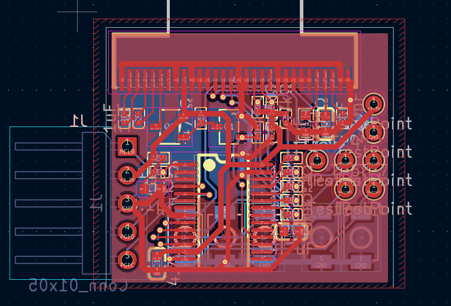
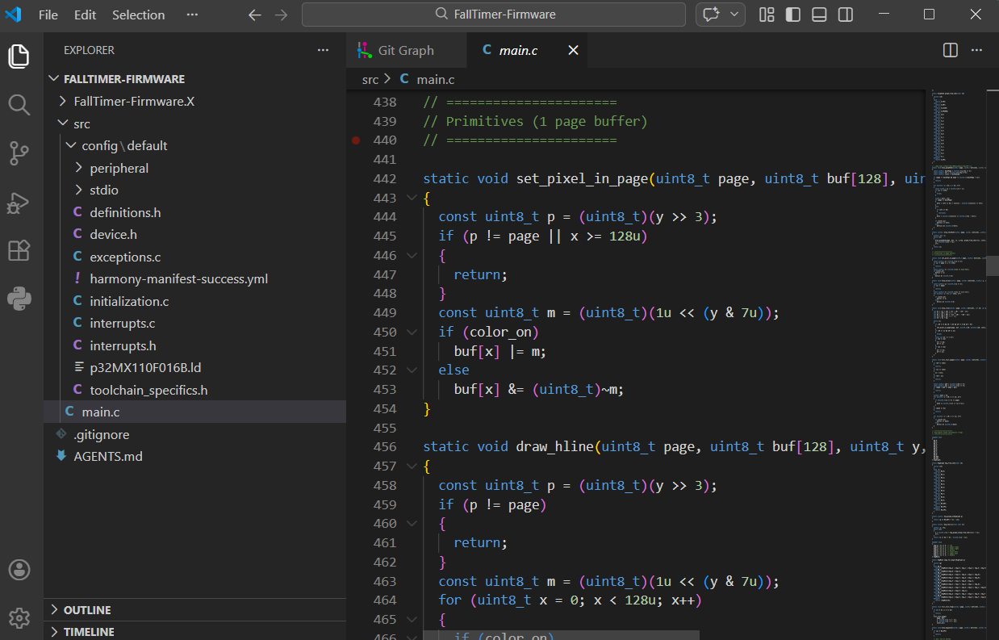

特殊仕様タイマーデバイス
PIC32マイコン上で動作するスタンドアロン組込み機器。SSD1306 OLEDにSPIでペース（秒/m）・経過時間・換算距雦をリアルタイム表示。プリセット管理UI・デバウンス・長押し検出・自動スリープを含む完全なファームウェアを一貫開発。
- C / PIC32MX
- SPI (SSD1306 OLED)
- ボタン入力 / デバウンス
- スリープ・省電力制御
SCHEMATIC — 回路図

タイマーデバイス v1.0 実機
DEVICE CODE
